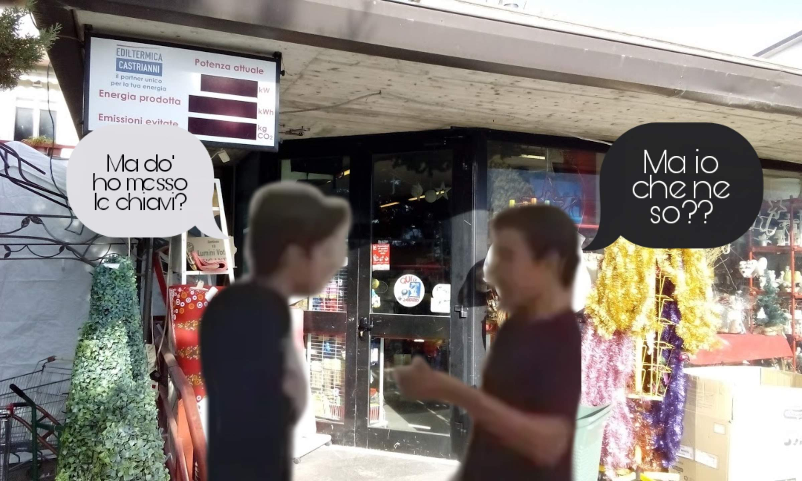

Dopo la piccola dose di ferie concessosi da Ridolfi per una
settimanella di villeggiatura nella riviera romagnola,
è arrivato il momento della grande partenza. Il viaggio
all'estero è sempre molto dubbioso per i Baianesi, che
sanno quello che lasciano ma non quello che trovano.
Per questo il magnate ha dato il via ai preparativi
con largo anticipo, dovendo anche chiudere il Bunker
per tutta la durata della sua assenza.
Ed è proprio su questo che ci concentreremo quest'oggi.
Infatti il CEO Alessandro Flavio ha temporaneamente sospeso
la sua decisione di assumere personale che si occupi del
management del Bunker durante il periodo estivo, in quanto
diffidente dell'efficienza di tali sostituti.

Chiusi quindi baracca e burattini, Ridolfi ha
deciso di lasciare la chiave sonica del suo patrimonio
alla sua fidata Silvana, presso
i grandi magazzini Pensa.
E qui viene il bello. Essendo di partenza anche lo staff
di Webeee, non abbiamo potuto assistere da vicino alla vicenda,
ma abbiamo numerose fonti, tra cui
il Generale Natali, il più
fidato, che ancora una volta ci ha esposto l'accaduto dal suo
imparziale e accurato punto di vista:
«»
Fortunatamente, si è fatto vivo un altro amico di Ridolfi, che più di
una volta ha dimostrato la sua fedeltà. Parliamo di
Lorenzo Tolomei,
che ormai esperto della zona, è andato personalmente ad indagare
sulla scomparsa delle chiavi. Ha poi riferito:
«Ho saputo delle chiavi, fortunatamente essendo
un veterano di Pensa (dopo la mitica faccenda della pizza)
mi sono subito precipitato lì e le ho trovate io, quando
scrivo queste righe le ho già restituite a Ridolfi,
altrimenti non farei così tanta pubblicità.
P.s. Rileggete nell'altro articolo cosa stava per
succedermi quando avevo scoperto della ferita del
Capo, bene, mi è successo veramente. Chi scivola,
chi va a sbattere contro i cartelli, segnali che spariscono,
tutte cose avvenute alla stazione di Spoleto.
A Baiano non sarebbe mai successo»